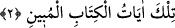
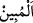

şu’bedir.”[2] buyrulmuştur. Bu şu’beler îman ehlînin hasletleridir. Onlar kendi
isimleriyle bir hadiste sayılmamıştır. İlim ehli onları muhtelif şekillerde saymışlardır.
Bu hadîsin lafzının ulaşabildiği en son şu’be sayısı yetmiş dokuzdur.
İmam Nesefî, Tefsîru’t-Teysîr’de der ki: “Ben O’nun tercih ettiği tertîbe ve
ictihâdıma göre onları şöylece sayıyorum: “Peygamberimiz (a.s.) îmanın şu’belerini
saymaya tehlîl ile başladı. Ondan sonra şunlar gelir: Tekbir, tesbîh, tahmîd, temcîd,
tecrîd, tefrîd, tevbe, inâbe, nezâfet/temizlik, taharet, namaz, zekât, oruç, kıyâm/gece
ibâdeti, îtikâf, hac, umre, kurban, sadaka, gazâ, köle âzâdı, Kur’ân kırâati, ihsâna devam
etmek, isyandan uzak durmak, azgınlığı terk etmek, düşmanlığı bırakmak, gönlün takvâsı,
lisânı korumak, senâ, duâ, havf, recâ, hayâ, sıdk, sâfâ, nasîhat/samîmiyet, vefâ, nedâmet,
ağlamak, ihlâs, zekâ, hilm, sehâ/cömertlik, iyiliğe şükür, belâya sabır, kazâya rızâ, ölüm
için hazırlanmak, sünnete uymak, sahâbeye muvâfakat, yaşlılara ihtiram, küçüklere
şefkat, ümmetin âlimlerine uymak, avâma şefkat, havâssa ihtiram ve saygı, Ehl-i sünnete
tâzim, emâneti eda, iffeti korumak, yemek yedirmek, iyilik yapmak, yetimleri kollamak,
sıla-i rahim, selâmı yaymak, Allah’a teslimiyette sadâkat, günahlardan korunmayı
gerçekleştirmek, dünya konusunda zühd, âhirete rağbet, Mevlâ’ya muvâfakat, hevâya
muhâlefet, cehennemden sakınmak, Me’vâ cennetini taleb, keremi/cömertliği yaymak,
âile mahremiytini muhafaza, hizmetçilere iyilik yapmak, tevfîkı taleb, tahkîkı muhâfaza,
komşu ve arkadaşları gözetmek, kölelere iyi davranmak ve îmanın şu’belerinin en
aşağısı yoldan eziyet veren şeyleri kaldırmak.”
Kim îman şu’belerini tam olarak yerine getirirse, Allah’ın vaadi olan îmânın kemâline
nâil olur. Nitekim Allah Teâlâ bu hususta şöyle buyurur: “İman edip de îmanlarına
herhangi bir haksızlık bulaştırmayanlar var ya, işte güven onlarındır ve onlar
doğru yolu bulanlardır.” (el-En’âm, 6/82)
2. Bunlar apaçık Kitab’ın âyetleridir.
Yâni bu sûre ve onun içindeki âyetler, i’câzı ve Allah’ın kelâmı oluşunun doğruluğu
apaçık olan Kur’ân âyetleridir. Şâyet böyle olmasaydı, onun benzerini getirebilirlerdi
ve Kur’ân’a karşı koymaktan âciz olmazlardı.
“
” kelimesi, açık ve âşikâr mânâsınadır veya şer’î hükümleri ve onlarla ilgili
hususları açıklayan demektir.
et-Te’vîlâtü’n-Necmiyye’de der ki: “Burada ve sûrelerin başlarında bulunan bu
mukattaa harflerinin yaratılmış harfler kabilinden olmadığına, bilakis kadîm olan apaçık
Kitab’ın âyetleri kabilinden olduğuna işâret etmektedir. Çünkü bunlardan her harf,
âyetler gibi birçok mânâlara delâlet etmektedir.”